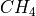

3. Introduction¶
This report presents the details of the governing equations, physical parameterizations, and numerical algorithms defining the version of the NCAR Community Atmosphere Model designated . The material provides an overview of the major model components, and the way in which they interact as the numerical integration proceeds. Details on the coding implementation, along with in-depth information on running the CAM5.0 code, are given in a separate technical report entitled ‘User’s Guide to Community Atmosphere Model CAM5.0’’ ([Eat10]). As before, it is our objective that this model provide NCAR and the university research community with a reliable, well documented atmospheric general circulation model. This version of the CAM5.0 incorporates a number enhancements to the physics package (adjustments to the deep convection algorithm including the addition of Convective Momentum Transports (CMT), a transition to the finite volume dynamical core as default and the option to run a computationally highly scaleable dynamical core). The ability to transition between CAM-standalone and fully coupled experiment frameworks is much improved in CAM5.0. We believe that collectively these improvements provide the research community with a significantly improved atmospheric modeling capability.
3.1. Brief History¶
3.1.1. CCM0 and CCM1¶
Over the last twenty years, the NCAR Climate and Global Dynamics (CGD) Division has provided a comprehensive, three-dimensional global atmospheric model to university and NCAR scientists for use in the analysis and understanding of global climate. Because of its widespread use, the model was designated a community tool and given the name Community Climate Model (CCM). The original versions of the NCAR Community Climate Model, CCM0A ([Was82] ) and CCM0B ([Wil83]) were based on the Australian spectral model ([BMPT77]; [MBP78]) and an adiabatic, inviscid version of the ECMWF spectral model ([BJC79]). The CCM0B implementation was constructed so that its simulated climate would match the earlier CCM0A model to within natural variability (incorporated the same set of physical parameterizations and numerical approximations), but also provided a more flexible infrastructure for conducting medium– and long–range global forecast studies. The major strength of this latter effort was that all aspects of the model were described in a series of technical notes, which included a Users’ Guide ([SBWW83]), a subroutine guide which provided a detailed description of the code ([Wil83]) a detailed description of the algorithms ([WBS+83]), and a compilation of the simulated circulation statistics ([WW84]). This development activity firmly established NCAR’s commitment to provide a versatile, modular, and well–documented atmospheric general circulation model that would be suitable for climate and forecast studies by NCAR and university scientists. A more detailed discussion of the early history and philosophy of the Community Climate Model can be found in [Ant86].
The second generation community model, CCM1, was introduced in July of 1987, and included a number of significant changes to the model formulation which were manifested in changes to the simulated climate. Principal changes to the model included major modifications to the parameterization of radiation, a revised vertical finite-differencing technique for the dynamical core, modifications to vertical and horizontal diffusion processes, and modifications to the formulation of surface energy exchange. A number of new modeling capabilities were also introduced, including a seasonal mode in which the specified surface conditions vary with time, and an optional interactive surface hydrology that followed the formulation presented by [Man69]. A detailed series of technical documentation was also made available for this version ([WKR+87]; [BDW+87]; [WW87]; [HBWB89]) and more completely describe this version of the CCM.
3.1.2. CCM2¶
The most ambitious set of model improvements occurred with the introduction of the third generation of the Community Climate Model, CCM2, which was released in October of 1992. This version was the product of a major effort to improve the physical representation of a wide range of key climate processes, including clouds and radiation, moist convection, the planetary boundary layer, and transport. The introduction of this model also marked a new philosophy with respect to implementation. The CCM2 code was entirely restructured so as to satisfy three major objectives: much greater ease of use, which included portability across a wide range of computational platforms; conformance to a plug-compatible physics interface standard; and the incorporation of single-job multitasking capabilities.
The standard CCM2 model configuration was significantly different from its predecessor in almost every way, starting with resolution where the CCM2 employed a horizontal T42 spectral resolution (approximately 2.8 x 2.8 degree transform grid), with 18 vertical levels and a rigid lid at 2.917 mb. Principal algorithmic approaches shared with CCM1 were the use of a semi-implicit, leap frog time integration scheme; the use of the spectral transform method for treating the dry dynamics; and the use of a bi-harmonic horizontal diffusion operator. Major changes to the dynamical formalism included the use of a terrain-following hybrid vertical coordinate, and the incorporation of a shape-preserving semi-Lagrangian transport scheme [WO94a] for advecting water vapor, as well as an arbitrary number of other scalar fields (eg cloud water variables, chemical constituents, etc.). Principal changes to the physics included the use of a delta-Eddington approximation to calculate solar absorption [Bri92]; the use of a Voigt line shape to more accurately treat infrared radiative cooling in the stratosphere; the inclusion of a diurnal cycle to properly account for the interactions between the radiative effects of the diurnal cycle and the surface fluxes of sensible and latent heat; the incorporation of a finite heat capacity soil/sea ice model; a more sophisticated cloud fraction parameterization and treatment of cloud optical properties [KHB94]; the incorporation of a sophisticated non-local treatment of boundary-layer processes [HB93]; the use of a simple mass flux representation of moist convection [Hac94], and the optional incorporation of the Biosphere-Atmosphere Transfer Scheme (BATS) of [DHSKW87]. As with previous versions of the model, a User’s Guide [BRO92] and model description [HBB+93] were provided to completely document the model formalism and implementation. Control simulation data sets were documented in [Wil93].
3.1.3. CCM3¶
The CCM3 was the fourth generation in the series of NCAR’s Community Climate Model. Many aspects of the model formulation and implementation were identical to the CCM2, although there were a number of important changes that were incorporated into the collection of parameterized physics, along with some modest changes to the dynamical formalism. Modifications to the physical representation of specific climate processes in the CCM3 were motivated by the need to address the more serious systematic errors apparent in CCM2 simulations, as well as to make the atmospheric model more suitable for coupling to land, ocean, and sea-ice component models. Thus, an important aspect of the changes to the model atmosphere was that they address well known systematic biases in the top-of-atmosphere and surface (to the extent that they were known) energy budgets. When compared to the CCM2, changes to the model formulation fell into five major categories: modifications to the representation of radiative transfer through both clear and cloudy atmospheric columns, modifications to hydrological processes (i.e., in the form of changes to the atmospheric boundary layer, moist convection, and surface energy exchange), the incorporation of a sophisticated land surface model, the incorporation of an optional slab mixed-layer ocean/thermodynamic sea-ice component, and a collection of other changes to the formalism which did not introduce significant changes to the model climate.
Changes to the clear-sky radiation formalism included the incorporation
of minor CO bands trace gases (
bands trace gases (

, , , ) in the longwave parameterization, and the
incorporation of a background aerosol (0.14 optical depth) in the
shortwave parameterization. All-sky changes included improvements to the
way in which cloud optical properties (effective radius and liquid water
path) were diagnosed, the incorporation of the radiative properties of
ice clouds, and a number of minor modifications to the diagnosis of
convective and layered cloud amount. Collectively these modification
substantially reduced systematic biases in the global annually averaged
clear-sky and all-sky outgoing longwave radiation and absorbed solar
radiation to well within observational uncertainty, while maintaining
very good agreement with global observational estimates of cloud
forcing. Additionally, the large warm bias in simulated July surface
temperature over the Northern Hemisphere, the systematic over-prediction
of precipitation over warm land areas, and a large component of the
stationary-wave error in CCM2, were also reduced as a result of
cloud-radiation improvements.
, ) in the longwave parameterization, and the
incorporation of a background aerosol (0.14 optical depth) in the
shortwave parameterization. All-sky changes included improvements to the
way in which cloud optical properties (effective radius and liquid water
path) were diagnosed, the incorporation of the radiative properties of
ice clouds, and a number of minor modifications to the diagnosis of
convective and layered cloud amount. Collectively these modification
substantially reduced systematic biases in the global annually averaged
clear-sky and all-sky outgoing longwave radiation and absorbed solar
radiation to well within observational uncertainty, while maintaining
very good agreement with global observational estimates of cloud
forcing. Additionally, the large warm bias in simulated July surface
temperature over the Northern Hemisphere, the systematic over-prediction
of precipitation over warm land areas, and a large component of the
stationary-wave error in CCM2, were also reduced as a result of
cloud-radiation improvements.
Modifications to hydrological processes included revisions to the major contributing parameterizations. The formulation of the atmospheric boundary layer parameterization was revised (in collaboration with Dr. A. A. M. Holtslag of KNMI), resulting in significantly improved estimates of boundary layer height, and a substantial reduction in the overall magnitude of the hydrological cycle. Parameterized convection was also modified where this process was represented using the deep moist convection formalism of [ZM95] in conjunction with the scheme developed by [Hac94] for CCM2. This change resulted in an additional reduction in the magnitude of the hydrological cycle and a smoother distribution of tropical precipitation. Surface roughness over oceans was also diagnosed as a function of surface wind speed and stability, resulting in more realistic surface flux estimates for low wind speed conditions. The combination of these changes to hydrological components resulted in a 13% reduction in the annually averaged global latent heat flux and the associated precipitation rate. It should be pointed out that the improvements in the radiative and hydrological cycle characteristics of the model climate were achieved without compromising the quality of the simulated equilibrium thermodynamic structures (one of the major strengths of the CCM2) thanks in part to the incorporation of a [Sun88] style evaporation of stratiform precipitation.
The CCM3 incorporated version 1 of the Land Surface Model (LSM) developed by [Bon96] which provided for the comprehensive treatment of land surface processes. This was a one-dimensional model of energy, momentum, water, and CO$_2$ exchange between the atmosphere and land, accounting for ecological differences among vegetation types, hydraulic and thermal differences among soil types, and allowing for multiple surface types including lakes and wetlands within a grid cell. LSM replaced the prescribed surface wetness, prescribed snow cover, and prescribed surface albedos in CCM2. It also replaced the land surface fluxes in CCM2, using instead flux parameterizations that included hydrological and ecological processes (eg soil water, phenology, stomatal physiology, interception of water by plants).
The fourth class of changes to the CCM2 included the option to run CCM3 with a simple slab ocean-thermodynamic sea ice model. The model employs a spatially and temporally prescribed ocean heat flux and mixed layer depth, which ensures replication of realistic sea surface temperatures and ice distributions for the present climate. The model allowed for the simplest interactive surface for the ocean and sea ice components of the climate system.
The final class of model modifications included a change to the form of
the hydrostatic matrix which ensures consistency between  and the discrete continuity equation, and a more generalized form of the
gravity wave drag parameterization. In the latter case, the
parameterization was configured to behave in the same way as the CCM2
parameterization of wave drag, but included the capability to exploit
more sophisticated descriptions of this process.
and the discrete continuity equation, and a more generalized form of the
gravity wave drag parameterization. In the latter case, the
parameterization was configured to behave in the same way as the CCM2
parameterization of wave drag, but included the capability to exploit
more sophisticated descriptions of this process.
One of the more significant implementation differences with the earlier model was that CCM3 included an optional message-passing configuration, allowing the model to be executed as a parallel task in distributed-memory environments. This was an example of how the Climate and Global Dynamics Division continued to invest in technical improvements to the CCM in the interest of making it easier to acquire and use in evolving computational environments. As was the case for CCM2, the code was internally documented, obviating the need for a separate technical note that describes each subroutine and common block in the model library. Thus, the Users’ Guide, the land surface technical note, the CCM3 technical note [KHB+96], the actual code and a series of reviewed scientific publications (including a special issue of the Journal of Climate, Volume 11, Number 6) were designed to completely document CCM3.
3.1.4. CAM3¶
The CAM3 was the fifth generation of the NCAR atmospheric GCM. The name of the model series was changed from Community Climate Model to Community Atmosphere Model to reflect the role of CAM3 in the fully coupled climate system. In contrast to previous generations of the atmospheric model, CAM3 had been designed through a collaborative process with users and developers in the Atmospheric Model Working Group (AMWG). The AMWG includes scientists from NCAR, the university community, and government laboratories. For CAM3, the consensus of the AMWG was to retain the spectral Eulerian dynamical core for the first official release although the code includes the option to run with semi-Lagrange dynamics or with finite-volume dynamics (FV). The addition of FV was a major extension to the model provided through a collaboration between NCAR and NASA Goddard’s Data Assimilation Office (DAO). The major changes in the physics included treatment of cloud condensed water using a prognostic formulation with a bulk microphysical component following [RKristjansson98] and a macroscale component following [ZLB+03]. The [ZM95] parameterization for deep convection was retained from CCM3.
A new treatment of geometrical cloud overlap in the radiation calculations computed the shortwave and longwave fluxes and heating rates for random overlap, maximum overlap, or an arbitrary combination of maximum and random overlap. The calculation was completely separated from the radiative parameterizations. The introduction of the generalized overlap assumptions permitted more realistic treatments of cloud-radiative interactions. The methodology was designed and validated against calculations based upon the independent column approximation (ICA). A new parameterization for the longwave absorptivity and emissivity of water vapor preserved the formulation of the radiative transfer equations using the absorptivity/emissivity method. The components of the method related to water vapor were replaced with new terms calculated with the General Line-by-line Atmospheric Transmittance and Radiance Model (GENLN3). The mean absolute errors in the surface and top-of-atmosphere clear-sky longwave fluxes for standard atmospheres were reduced to less than 1 W/m. The near-infrared absorption by water vapor was also updated to a parameterization based upon the HITRAN2k line database [RBB+03] that incorporated the CKD 2.4 prescription for the continuum. The magnitude of errors in flux divergences and heating rates relative to modern LBL calculations were reduced by approximately seven times compared to the previous CCM3 parameterization. The uniform background aerosol was replaced with a present-day climatology of sulfate, sea-salt, carbonaceous, and soil-dust aerosols. The climatology was obtained from a chemical transport model forced with meteorological analysis and constrained by assimilation of satellite aerosol retrievals. These aerosols affect the shortwave energy budget of the atmosphere. CAM3 also included a mechanism for treating the shortwave and longwave effects of volcanic aerosols. Evaporation of convective precipitation following [Sun88] was implemented and enhancement of atmospheric moisture through this mechanism was offset by drying introduced by changes in the longwave absorptivity and emissivity. A careful formulation of vertical diffusion of dry static energy was also implemented.
Additional capabilities included a new thermodynamic package for sea ice in order to mimic the major non-dynamical aspects of CSIM; including snow depth, brine pockets, internal shortwave radiative transfer, surface albedo, ice-atmosphere drag, and surface exchange fluxes. CAM3 also allowed for an explicit representation of fractional land and sea-ice coverage that gave a much more accurate representation of flux exchanges from coastal boundaries, island regions, and ice edges. This fractional specification provided a mechanism to account for flux differences due to sub-grid inhomogeneity of surface types. A new, extensible climatological and time-mean sea-surface temperature boundary data was made available from a blended product using the global HadISST OI dataset prior to 1981 and the Smith/Reynolds EOF dataset post-1981. Coupling was upgraded in order to couple the dynamical core with the parameterization suite in a purely time split or process split manner. The distinction is that in the process split approximation the physics and dynamics are both calculated from the same past state, while in the time split approximations the dynamics and physics are calculated sequentially, each based on the state produced by the other.
3.1.5. CAM4¶
The CAM4 was the sixth generation of the NCAR atmospheric GCM and had again been developed through a collaborative process of users and developers in the Atmosphere Model Working Group (AMWG) with signficant input from the Chemistry Climate Working Group (Chem-Clim WG) and the Whole Atmosphere Model Working Group (WAMWG). The model had science enhancements from CAM3 and represented an intermediate release version as part of a staged and parallel process in atmospheric model development. In the CAM4 changes to the moist physical representations centered on enhancements to the existing [ZM95] deep convection parameterization. The calculation of Convective Available Potential Energy (CAPE) assumed an entraining plume to provide the in-cloud temperature and humidity profiles used to determine bouyancy and related cloud closure properties (chapter~ref{ssec:deep-convection}). The modification is based on the conservation of moist entropy and mixing methods of [RB86][RB92]. It replaced the standard undilute non-entraining plume method used in CAM3 and was employed to increase convection sensitivity to tropospheric moisture and reduce the amplitude of the diurnal cycle of precipitation over land. Sub-grid scale Convective Momentum Transports (CMT) were added to the deep convection scheme following [RR08] and the methodology of [GKI97] (chapter~:ref:ssec:Convection-CMT). CMT affects tropospheric climate mainly through changes to the Coriolis torque. These changes resulted in improvement of the Hadley circulation during northern Winter and it reduced many of the model biases. In an annual mean, the tropical easterly bias, subtropical westerly bias, and the excessive southern hemisphere mid-latitude jet were improved.
In combination these modifications to the deep-convection lead to significant improvements in the phase, amplitude and spacial anomaly patterns of the modeled El Ni~{n}o, as documented in [NRJ08]. The calculation of cloud fraction in polar climates was also modified for the CAM4.0. Due to the combination of a diagnostic cloud fraction and prognostic cloud water represntation it was possible to model unphysical extensive cloud decks with near zero in-cloud water in the CAM3. This was particularly pervasize in polar climates in Winter. These calculation inconsitencies and large cloud fractions are significantly reduced with modifications to the calculation of stratiform cloud following [VW08]. In the lower troposphere a ‘freeze-drying’ process is perfomed whereby cloud fractions were systematically reduced for very low water vaopr amounts. The low cloud reduction caused an Arctic-wide drop of 15 W m$^{-2}$ in surface cloud radiative forcing (CRF) during winter and about a 50% decrease in mean annual Arctic CRF. Consequently, wintertime surface temperatures fell by up to 4 K on land and 2 K over the Arctic Ocean, thus significantly reducing the CAM3 pronounced warm bias. More generally the radiation calculation was performed using inconsistent cloud fraction and condensate quantities in the CAM3. In CAM4 this was remedied with an updated cloud fraction calculation prior to the radiation call at each physics timestep. The coupled climate performance with the CAM4.0 physics changes was summarized in the horizontal resolution comparison study of [ent09].
For the dynamical core component of CAM4 the finite volume (FV) scheme was made the default due to its superior transport properties [LR96]. Modifications were made that upgraded the code version to a more recent NASA Goddard supported version. Other changes provided new horizontal grid discretizations (e.g., 1.9x2.5 deg and 0.9x1.25 deg) for optimal computational processor decompostion and polar filtering changes for noise reductions and more continuous (in latitude) filtering. In addition to the existing finite volume and spectral-based dynamical core a new option was also made available that represents the first scheme released with CAM that removes the computational scalability restrictions associated with a pole convergent latitude-longitude grid and the associated polar filtering requirements.
For the dynamical core component of CAM4 the finite volume (FV) scheme was made the default due to its superior transport properties (Lin and Rood 1996). Modifications were made that upgraded the code version to a more recent NASA Goddard supported version. Other changes provided new horizontal grid discretizations (e.g., 1.9x2.5 deg and 0.9x1.25 deg) for optimal computational processor decompostion and polar filtering changes for noise reductions and more continuous (in latitude) filtering. In addition to the existing finite volume and spectral-based dynamical core a new option was also made available that represents the first scheme released with CAM that removes the computational scalability restrictions associated with a pole convergent latitude-longitude grid and the associated polar filtering requirements.
Funded in part by the Department of Energy (DOE) Climate Change Prediction Program the scalable and efficient spectral-element-based atmospheric dynamical core uses the High Order Method Modeling Environment (HOMME) on a cubed sphere grid and was developed by members of the Computational Science Section and the Computational Numerics Group of NCAR’s Computational and Information Systems Laboratory (CISL). The finite element dynamical core (commonly referred to as the HOMME core) is fully integrated into CCSM coupling architecture and is invaluable for high resolution climate integrations on existing and upcoming massively parallel computing platforms.
Model flexibility was increased significantly from the CAM3, both within CAM and the CCSM system as a whole. The method for running thermodynamic sea-ice in CAM-only mode was moved to be maintained entirely within the CICE model of the CCSM4. The single-column version of CAM was given the flexibility to be built and run using the same infrastructure as the CAM build and run mechanism. The SCAM GUI run method was no longer supported. The increased coupling flexibility also allowed the introduction of a more consistant method for performing slab-ocean model (SOM) experiments. SOM experiments were, by default, now performed using forcing data from an existing CCSM coupled run. This had the advantage of having a closed temperature budget for both the ice and the ocean mixed layer from a coupled run. The methodology was therefore configured to reproduce the fully coupled CCSM climate as opposed to a reproduction of a psuedo-observed climate available with the CAM3-specific SOM method. The CAM3-specific SOM method was no longer made available. For more information regarding updated run methods see the CAM4.0 users guide of Eaton (2010).
3.1.6. Overview of CAM5.0¶
3.1.6.1. The Community Atmosphere Model¶
CAM has been modified substantially with a range of enhancements and improvements in the representation of physical processes since version 4 (CAM4). In particular, the combination of physical parameterization enhancements makes it possible to simulate full aerosol cloud interactions including cloud droplet activation by aerosols, precipitation processes due to particle size dependant behavior and explicit radiative interaction of cloud particles. As such the CAM5.0 represents the first version of CAM that is able to simulate the cloud-aerosol indirect radiative effects. More generally CAM5.0 forms the main atmopshere component of the COmmunity Earth System Model, version 1 (CESM1). The entensive list of physical parameterization improvements are described below:
A new moist turbulence scheme (Section pbl_uw) is included
that explicitly simulates stratus-radiation-turbulence interactions,
making it possible to simulate full aerosol indirect effects within
stratus. It is based on a diagnostic Turbulent Kinetic Energy (TKE)
forumlation and uses a  order K-diffusion scheme with
entrainment [BP09] originally developed at the University of
Washington.. The scheme operates in any layer of the atmopshere when the
moist
order K-diffusion scheme with
entrainment [BP09] originally developed at the University of
Washington.. The scheme operates in any layer of the atmopshere when the
moist  ( Richardson number ) is larger than its critical
value.
( Richardson number ) is larger than its critical
value.
A new shallow convection scheme (Section sec-shallow-convection) uses a realistic plume dilution equation and closure that accurately simulates the spatial distribution of shallow convective activity (Park and Bretherton 2009). A steady state convective updraft plume and small fractional area are assumed. An explicit computation of the convective updraft vertcial velocity and updraft fraction is performed using an updraft vertical momentum equation, and thus provides a representation of convective momentum transports. The scheme is specifically designed to interact with the new moist turbulence scheme in order to prevent double counting seen in previous CAM parameterizations. The deep convection parameterization is retained from CAM4.0 (Section Deep Convection).
Stratiform microphysical processes (Section sec-microphysics) are represented by a prognostic, two-moment formulation for cloud droplet and cloud ice with mass and number concentrations following the original parameterization of [MG08]. The implimentation in cam [GMG08] determines liquid and ice particle sizes from gamma functions and their evolution in time is subject to grid-scale advection, convective detrainment, turbulent diffusion and several microphysical processes. Activation of cloud droplets occurs on an aerosol size distribution based on aerosol chemistry, temperature and vertical velocity. A sub-grid scale vertical velocity is provided through a turbulent kinetic energy approximation. A number of mechanisms are calcuated for ice crystal nucleation [LPGW07] and combined with modifications to allow ice supersaturation [G+10].
The revised cloud macrophysics scheme (Section sec-macrophysics,:cite:PBR10) provides a more transparent treatment of cloud processes and imposes full consistency between cloud fraction and cloud condensate. Separate calculations are performed for liquid and ice stratiform cloud fractions which are assumed to be maximally overlapped. Liquid cloud fraction is based on an assumed triangular distribution of total relative humidity. Ice cloud fraction is based on [Get10] and allows supersaturation via a modified relative humidity over ice and the inclusion of ice condensate amount.
A new 3-mode modal aerosol scheme (MAM3, Section aerosols, [LG10]) provides internally mixed representations of number concentrations and mass for Aitkin, accumulation and course aerosol modes which are merged characterizations of the more complex 7-mode version of the scheme. Anthropogenic emissions, defined as originating from industrial, domestic and agriculture activity sectors, are provided from the [lamarque10] IPCC AR5 emission data set. Emissions of black carbon and organic carbon represent an update of [bond07] and [junker08]. Emissions of sulfur dioxide are an update of [SPW01], [smith04]. Injection heights, and size distribution of emissions data are not provided with the raw datasets so the protocols of [dentener06] are followed for CAM5.0. AEROCOM emission datastes are used for natural aeroso0l sources. All emission datasets required to run MAM for pre-industrial or 20th century scenarios are available for download. A full inventory of observationally based aerosol emission mass and size is provided in standard available datasets. The 7-mode version of the scheme is also available.
Calculations and specifications for the condensed phase optics (aerosols, liquid cloud droplets, hydrometeors and ice crystals) are taken from the microphysics and aerosol parmeterization quantities and provided as input to the radiation scheme (Section ref{sec:condensed_optics}). The radiation scheme (Section ref{sec:radiation}) has been updated to the Rapid Radiative Transfer Method for GCMs (RRTMG, [IDM+08][ mlawer]). It employs an efficient and accurate modified correlated-k method for calculating radiative fluxes and heating rates in the clear sky and for the condensed phase species. For each short-wave band calculation extinction optical depth, single scattering albedo and asymmetry properties are specified. For each long-wave band mass-specific absorption is specified. The aerosol optical properties are defined for each mode of the MAM as described by [GZ07]. Hygroscopicity characteristics are specified for soluable species. For volcanic aerosols a geometric mean radius is used. Optical properties of aerosols are combined prior to the radiative calculation. Liquid-cloud optics are calculated following [Wis96] and ice-cloud optics are calculated following [Mit02]. Ice-cloud size optics are extended to allow for radiatively active falling snow. Optical properties of clouds (including separate fractions and in-cloud water contents) are combined prior to the radiative calculation. RRTM separates the
short-wave spectrum into 14 bands extending from 0.2  m to 12.2
m, and models sources of extinction for HO,
O
m to 12.2
m, and models sources of extinction for HO,
O , CO, O, CH
, CO, O, CH ,
N and Rayleigh scattering. Solar irradiance is now specified
for the short-wave bands from the Lean dataset [WLS05].
The long-wave spectrum is separated into 16 bands extending from
3.1 m to 1000 m with molecular sources of
absorption for the same species, in addition to CFC-11 (containing
multiple CFC species) and CFC-12. RRTMG has extensive modifications from
the original RRTM in order to provide significant speed-up for long
climate integrations. Chief amongt these is the Monte-Carlo Independent
Column Approximation [PM03]) that represnts
sub-grid scale cloud variability. With these modifications RRTMG still
retains superior offline agreement with line-by-line calculations when
compared to the previous CAM radiation package (CAM-RT).
,
N and Rayleigh scattering. Solar irradiance is now specified
for the short-wave bands from the Lean dataset [WLS05].
The long-wave spectrum is separated into 16 bands extending from
3.1 m to 1000 m with molecular sources of
absorption for the same species, in addition to CFC-11 (containing
multiple CFC species) and CFC-12. RRTMG has extensive modifications from
the original RRTM in order to provide significant speed-up for long
climate integrations. Chief amongt these is the Monte-Carlo Independent
Column Approximation [PM03]) that represnts
sub-grid scale cloud variability. With these modifications RRTMG still
retains superior offline agreement with line-by-line calculations when
compared to the previous CAM radiation package (CAM-RT).
3.1.6.2. The CAM Chemistry Model (CAM-CHEM)¶
Chemistry in CAM is now fully interactive and implemented in CESM (Section sec-chem_sub_cam); in particular, emissions of biogenic compounds and deposition of aerosols to snow, ice, ocean and vegetation are handled through the coupler. The released version of CAM-chem in CESM is using the recently-developed superfast chemistry (Section Superfast Chemistry), in collaboration with P. Cameron-Smith from LLNL and M. Prather from UCI) to perform centennial scale simulations at a minor cost increase over the base CAM4. These simulations use the recently developed 1850-2005 emissions created in support of CMIP5.
3.1.6.3. The Whole Atmosphere Community Climate Model (WACCM)¶
WACCM4 (Section sec-waccm), incorporates several improvements and enhancements over the previous version (3.1.9). It can be run coupled to the POP2 and CICE CESM model components. The model’s chemistry module (Section sec-chem_sub_cam) has been updated according to the latest JPL-2006 recommendations; a quasi-biennial oscillation may be imposed (as an option) by relaxing the winds to observations in the Tropics; heating from stratospheric volcanic aerosols is now computed explicitly; the effects of solar proton events are now included; the effect of unresolved orography is parameterized as a surface stress (turbulent mountain stress) leading to an improvement in the frequency of sudden stratospheric warmings; and gravity waves due to convective and frontal sources are parameterized based upon the occurrence of convection and the diagnosis of regions of frontogenesis in the model.